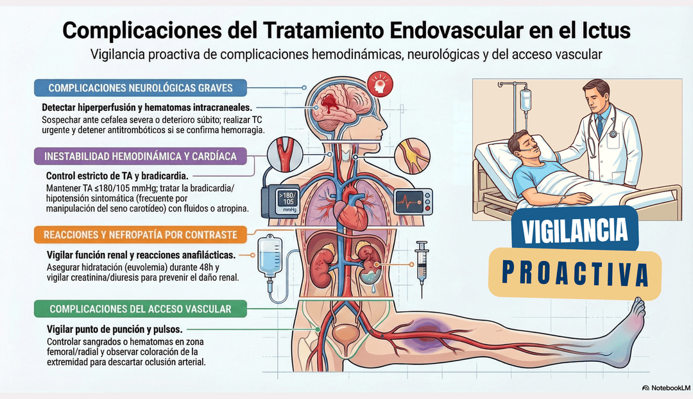

Tras el procedimiento endovascular (trombectomía o angioplastia), el paciente permanecerá en la Unidad de Ictus bajo vigilancia estrecha para detectar de forma temprana las posibles complicaciones derivadas del contraste o de la técnica mecánica.
Complicaciones por contraste
- Reacciones leves: Sensación de calor, náuseas, vómitos.
-
Reacciones graves: Excepcionalmente pueden presentarse reacciones anafilácticas con dificultad respiratoria, angioedema, arritmias, convulsiones... Requieren detener la infusión de contraste y soporte vital inmediato.
- Nefropatía por contraste: Vigilar la función
renal (creatinina/urea) y la diuresis en las 48 horas
posteriores al procedimiento, asegurando una correcta
hidratación (euvolemia) para facilitar su eliminación.
Complicaciones hemodinámicas y cardíacas
- Hipotensión y bradicardia: Frecuentes por
manipulación del seno carotídeo. Si la TA <110 mmHg o
la FC <50 lpm y es sintomática, actuar de
inmediato:
- Hipotensión: Administrar fluidoterapia IV (ringer lactato o salino); si no hay respuesta, iniciar drogas vasoactivas (ej. noradrenalina a dosis bajas) para mantener la perfusión cerebral.
- Bradicardia: Administrar atropina IV (1 mg, repetible según respuesta).
- Hipertensión: Las cifras elevadas deben tratarse de forma agresiva. El límite máximo permitido es ≤ 180/105 mmHg durante las primeras 24 horas post-procedimiento. Emplear fármacos IV titulables de acción rápida (ej. labetalol o urapidilo).
- Límite de seguridad:
Si la recanalización fue exitosa, evitar el descenso intensivo de la
TA sistólica por debajo de 130-140 mmHg,
ya que se ha asociado a peores resultados funcionales.
Complicaciones neurológicas graves
- Síndrome de
hiperperfusión: Complicación grave
secundaria a la restauración brusca del flujo en un lecho
vascular con autorregulación alterada, que puede causar
hemorragia cerebral o edema masivo.
- Clínica: Sospechar ante cefalea severa (típicamente ipsilateral), crisis epilépticas, náuseas/vómitos o rápido deterioro neurológico acompañado de picos hipertensivos.
- Manejo:
- Reducir la TA de forma estricta e inmediata.
- No suspender la doble antiagregación (AAS + Clopidogrel) a menos que se demuestre hemorragia intracraneal en la neuroimagen.
- Crisis epilépticas: Tratar las crisis instauradas con fármacos anticrisis intravenosos (ej. levetiracetam, ácido valproico o lacosamida). El uso profiláctico de antiepilépticos no está indicado en pacientes sin crisis.
- Hematoma intracraneal: Ante cualquier deterioro neurológico súbito, solicitar TC craneal urgente. Si se confirma hemorragia sintomática:
- Detener de inmediato cualquier tratamiento antitrombótico o anticoagulante en curso.
- Aplicar el protocolo de reversión específico (ej. Crioprecipitado y Ácido Tranexámico si hubo fibrinolisis previa; Idarucizumab/Andexanet o Concentrado de Complejo Protrombínico si tomaba anticoagulantes).
- Control estricto de la TA (objetivo TAS 140-160
mmHg) para evitar la expansión del hematoma.
Complicaciones del acceso vascular
-
Hematoma o sangrado: Vigilar estrechamente el punto de punción (femoral o radial) y comparar pulsos y coloración de las extremidades. La mayoría son leves y se controlan con compresión manual.
-
Otras complicaciones: Estar alerta ante signos de oclusión arterial aguda de la extremidad, pseudoaneurisma, fístula arteriovenosa o disección iliofemoral, avisando a cirugía vascular si es preciso.